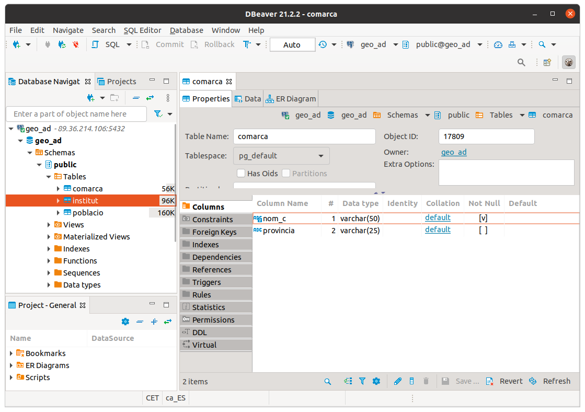
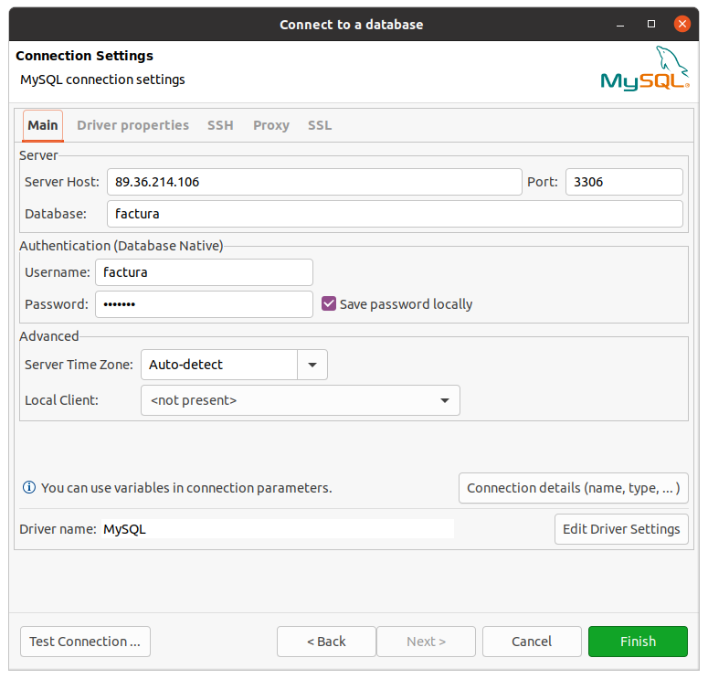
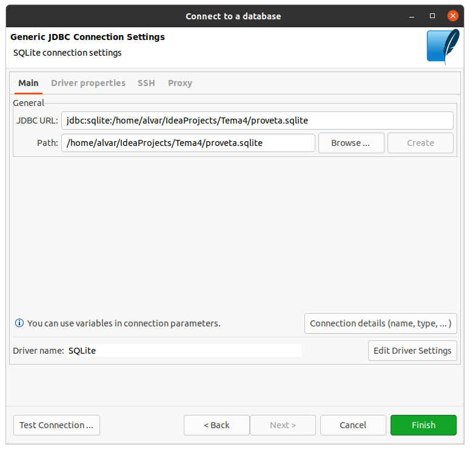

4.2 - DBeaver
Ja hem vist la utilitat d'inspeccionar les Bases de Dades que ens proporciona IntelliJ, i que ens permet accedir a les Bases de Dades per veure l'estructura i les dades de les taules, fins i tot, fer i executar sentències SQl. Però no és excessivament còmoda.
Els Sistemes Gestors de Bases de Dades tenen clients específics per a poder treballar amb les seues Bases de Dades.
Però hi ha un altre software, lliure, anomenat DBeaver que ens permet connectar a quasi totes les Bases de Dades Relacionals, i fins i tot a moltes BD NoSQL en la seua versió comercial (Enterprise Edition). Nosaltres utilitzarem la que sí que és de codi obert, la Community Edition.
Ens ho podem baixar des de la seua pàgina de descàrregues, https://dbeaver.io/download. En el moment de fer aquestos apunts van per la versió 21.2.2

La seua instal·lació no ofereix cap dificultat. En concret, per a Ubuntu, ens ofereix un paquet Debian, que senzillament hem d'instal·lar com a superusuari.
Aquest és el seu aspecte:
Anem a crear una connexió a PostgeSQL, una altra a MySQL i una altra a SQLite.
Quan creem una nova connexió ja podem veure que es pot fer a molts SGBD. En la primera pantalla ja tenim els 3 que volem nosaltres, però hi ha molts més

Quan li faça falta un Driver (que per cert seran drivers JDBC) ens preguntarà de baixar-lo automàticament, per tant serà comodíssim.
PostgreSQL
Aquestes són les dades de connexió que farem:
- Nom de la connexió: el que vulguem, per exemple geo_ad
- Host: 89.36.214.106
- Port: 5432 (és el port per defecte)
- Database: geo
- Usuari: geo
- Contrasenya: geo
- I en la pestanya PostgreSQL cuidem de no tenir seleccionada l'opció Show all databases, ja que és inútil mostrar Bases de Dades a les quals no tindrem accés
 |
 |
Una vegada creada la connexió podrem navegar fins les taules, i en seleccionar una veurem en 3 pestanyes l'estructura, les dades, i fins i tot un esquema de l'estil del Model Entitat-Relació (encara que en realitat representa el Model Relacional) on intervé la taula, és a dir, ens mostra les seues claus externes.
|  |  |
 |
Finalment observem com també podem executar sentències SQL de forma molt còmode, i on ens dóna molta ajuda per escriure correctament les paraules reservades i també les taules i camps de la nostra BD

MySQL
- Nom de la connexió: el que vulgueu, per exemple Connexio MySQL factura
- Servidor: 89.36.214.106
- Port: 3306
- Base de dades: factura
- Usuari: factura
- Contrasenya: factura

La seua utilització és igual de fàcil que en l'anterior cas.

SQLite
La connexió a SQLite és més senzilla i per tant ens preguntarà menys coses:
- Nom de la connexió
- Ruta i nom del fitxer

L'entorn serà totalment similar als dels casos anteriors. Però en aquesta Base de Dades de prova, proveta.sqlite no teníem cap taula:
Aprofitem per a crear una taula, per veure que és molt fàcil i còmode. Crearem una taula T1 amb 2 camps, c1 numèric, i c2 de text.
Potser el menys intuïtiu és la manera de crear els camps de la taula. Serà apretant amb el botó de la dreta en la zona de les columnes.

En les següents imatges es veu com es creen 2 camps. La tercera és en el moment de guardar la taula, i podem comprovar que el que fa és generar una consulta SQL
 |
 |
Llicenciat sota la Llicència Creative Commons Reconeixement CompartirIgual 2.5